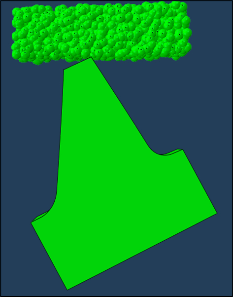

Checkpoint Finite Element Modeling

Finite element models are deterministic, and this is a good thing. When you submit the same input file 500 times, you'll get the same answer 500 times. Unfortunately, the computation will take the same amount of time 500 times. This is impractical when we want to run a large number of simulations to explore the parameter space of a process. Checkpointing seeks to solve this issue.
Checkpointing is a method of saving the state of a simulation at a given point in time. This allows the user to stop the simulation, and restart it at a later time. This is useful for a number of reasons. For example, if the simulation is running on a cluster, and the user's job is scheduled to end, the user can stop the simulation, and restart it at a later time. COBRA modifies this method by allowing the user to change the mesh between simulations and project the state of the previous simulation onto the new mesh, automatically initializing stateful material properties.
 In discrete processes, such as shot peening and cold spray coating, the net effect of the process can be quantified as the interaction of of many individual events. In shot peening, the compressive stress state of the part is determined by thousands of impacts between shot particles and the part. For a full-scale simualtion of a shot peening process, thousands of particles must be created, each with an associated conact pair that is checked for at each time step, and each with an impact event that induces plastic deformation in the part. The size of the model needed to capture the entire process is often too large to be tractable, in fact, most of the computational effort is spent translating particles through space that are not even in contact with the part! Checkpointing allows us to trim the fat from the model, by simulating one event (in this case, one particle at a time) and shrinking the model size to the region affected by the impact.